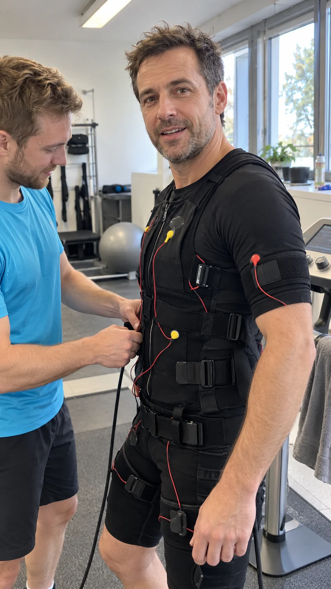
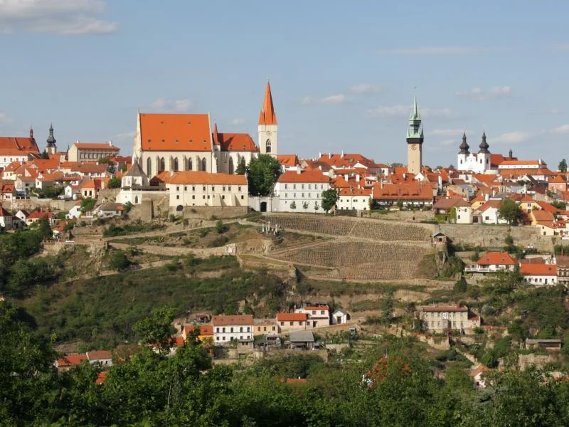

Najděte si svou hodinu.
Vyberete první lekci ve Znojmě a dostupný čas. Rezervaci i platbu dokončíte v oficiálním kalendáři.
OSOBNÍ TRENÉR. EMS. ZNOJMO.
Pohyb, který se vejde do vašeho týdne.
Seznamte se s EMS pod vedením trenéra.
20 min trénink. Poprvé si nechte 60 minut
na seznámení, přípravu a cvičení.

POPRVÉ? JSTE TU SPRÁVNĚ.
Nemusíte vědět, jak EMS funguje.
Od toho tu bude váš trenér.
Vyberete první lekci ve Znojmě a dostupný čas. Rezervaci i platbu dokončíte v oficiálním kalendáři.
Trenér s vámi probere průběh a vhodnost cvičení. Vysvětlí vybavení a nastaví intenzitu.
Úvodní cvičení absolvujete pod vedením trenéra. Potřebné oblečení a EMS vybavení dostanete na místě.
První návštěva: 60 minut. Samotný EMS trénink: 20 minut.
Chci si vybrat termín Ukázka tréninku ze sítě BodyExpress.
Ukázka tréninku ze sítě BodyExpress.JEDNODUŠE O EMS
Při EMS se jednoduché cviky propojují s elektrickou stimulací svalů. Trenér vás provede jednotlivými pohyby a nastaví intenzitu podle vaší zkušenosti.
První návštěva je prostor EMS poznat. V klidu, se srozumitelným vysvětlením a bez potřeby vlastní výbavy.
Co je dobré vědětČAS V DIÁŘI JEN PRO VÁS
Vyberte svou lekci. Otevře se skutečný kalendář studia Znojmo s aktuálními termíny.
VAŠE PRVNÍ EMS ZKUŠENOST
Seznámení s technologií, individuální nastavení a úvodní trénink s osobním trenérem.
Přejdete do oficiálního rezervačního systému BodyExpress / Reservanto. Tam zvolíte termín, přihlásíte se a dokončíte online platbu.
Rezervační pravidla ↗
Znojmo · fotografie z materiálů BodyExpress.BLÍZKO VÁM
Najdete nás v Kovářské ulici. Ať už jste ze Znojma, nebo přijíždíte z okolí, cestu do studia si snadno zobrazíte v mapě.
BODY EXPRESS ZNOJMOKovářská 307/6DOBRÉ VĚDĚT
Co si vzít, kolik času si nechat a jak rezervovat. Tady najdete odpovědi.
Ano, EMS Poprvé je určené pro první seznámení. Trenér vám vše vysvětlí a probere s vámi vhodnost tréninku. Při zdravotních omezeních se před rezervací domluvte se studiem, případně se svým lékařem.
20 minut trvá samotný EMS trénink. Na první návštěvu si vyhraďte 60 minut kvůli seznámení, přípravě a nastavení. U dalších lekcí počítejte s rezervačním blokem 30 minut.
Potřebné tréninkové oblečení i EMS vybavení vám ve studiu poskytneme. Podrobnosti k přípravě si ověřte před první návštěvou přímo u trenéra.
Tlačítko vás přenese do oficiálního rezervačního systému. Zde vyberete dostupný čas, dokončíte přihlášení a online platbu. Rezervovat lze podle pravidel nejdříve týden a nejpozději 15 minut před lekcí.
U EMS Poprvé podle rezervačních pravidel nelze rezervaci zrušit, lze ale poslat náhradníka. U dalších lekcí platí pravidla pro změnu termínu. Před zaplacením si prosím přečtěte úplné podmínky v rezervačním systému.
Ano. Síť nabízí jednotlivé lekce i delší programy. Aktuální nabídku pro Znojmo a vhodný další postup s vámi probere trenér po první návštěvě.